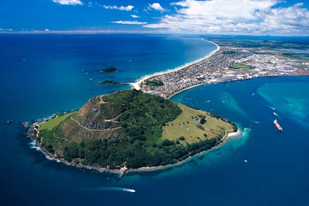
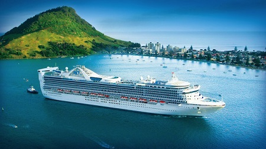

Mauao (Mount Maunganui)
Famous for its great weather and popular surf and swimming beaches, is a holiday destination for overseas visitors and locals alike. Tauranga and "The Mount" offer relaxation, adventure and culture. There are activities for everyone.
The name Tauranga comes from Maori, it roughly translates to "a sheltered anchorage". Tauranga is the largest city in New Zealand with a Maori name instead of a European name.
Tauranga is a port city located in the western Bay of Plenty region of the North Island of New Zealand. It has an urban population of 116,000 from the June 2008 estimate. Tauranga is the largest city and urban area in the Bay of Plenty. Nationwide, Tauranga is currently New Zealand's fifth largest urban area. It is one of New Zealand's fastest growing regions, with a 14 percent increase in population between the 2001 census and the 2006 census.
Early History of Tauranga and Mauao
The name Tauranga can be translated as meaning 'place of rest' or 'anchorage'. The earliest people known to have resided in the Tauranga area are the Purukupenga, whose name alone survives, and the Ngamarama, who inhabited all the land from the Waimapu Stream to the Kaimai ranges.
Many people of different waka passed through and some stayed. This included those of the Tainui canoe, which made only a brief stay, although evidence of their visit can be linked to 'nga pehi o Tainui', the ballast of Tainui, now known as Ratahi Rock.
Another was the Te Arawa canoe which made landfall at Maketu, with some of her crew occupying the land between the Tauranga harbour and the Kaituna River. After the departure of Tainui the Takitimu canoe then entered the Tauranga harbour. Its captain, Tamatea Arikinui or Tamatea Pokaiwhenua, climbed to the summit of Mauao (Mount Maunganui) to offer karakia (prayers) and to bury there the mauri (life force) of his people.
Tamatea built a pa (stockaded village) on the hill known as Maungatawa, where his people settled. Ngati Ranginui all descended from Tamatea's son, Ranginui. In later years Ngaiterangi after many failed attempts of looking to settle themselves in a permanent area led a massive raid on the Ngati Ranginui pa site on top of Mauao (around 1700). This attack resulted in the pa falling to Ngaiterangi, and is known as the 'Battle of the Kokowai'.
According to archaeologist there has been evidence of three pa sites recorded on top of and around Mauao. The final encounter of warfare ended at the cliffs of Mauao between Ngaiterangi and Ngapuhi. Armed with muskets Ngapuhi decided to intimidate and force their way through under the command of Te Morenga in 1820, the large pa site was not re-occupied after this battle. A peace was made with Ngapuhi shortly afterwards by Te Waru of Ngaiterangi.